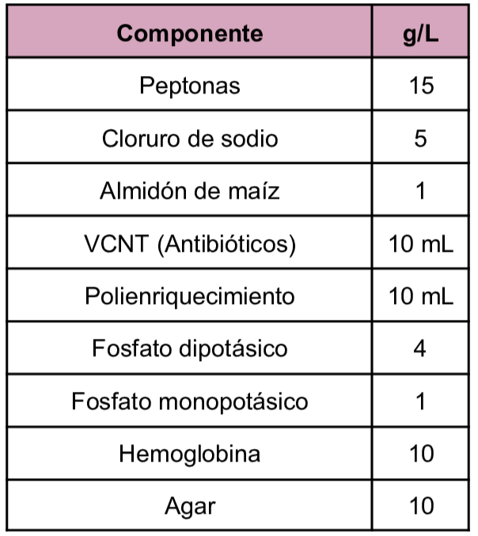
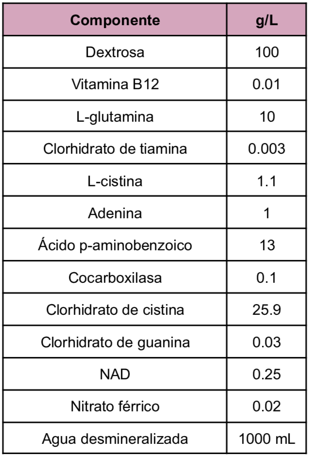
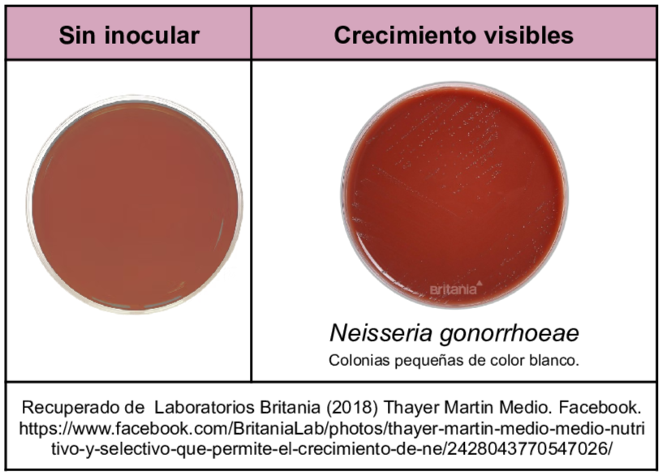

Medio de tipo enriquecido y selectivo para Neisseria patógena a partir de diversas muestras. Dentro de la composición del medio se tiene el enriquecimiento con hemoglobina al 1% además de la adición de antibióticos que permiten la selectividad del medio, la colistina inhibe el crecimiento de bacterias Gram negativas, la vancomicina inhibe bacterias Gram positivas y la nistatina inhibe levaduras, por otro lado el trimetoprim inhibe especies de Proteus
Composición

pH a 25°C 7.2±0.2
El Polienriquecimiento puede llevarse a cabo con IsovitalX, que contiene:

Resultados Posibles
Neisseria gonorrhoeae: colonias pequeñas definidas de color blanco grisáceo o incolas de tipo mucoides con consistencia suave con un diámetro de 0.5 a 1 mm.

Referencias
Aryal, S. (2022)Modified Thayer Martin Agar- Composition, Principle, Preparation, Results, Uses. https://microbenotes.com/modified-thayer-martin-agar/
MCD Lab (2025) Agar Thayer Martin. https://mcd.com.mx/medios-de-cultivo/57-agar-thayer-martin.html